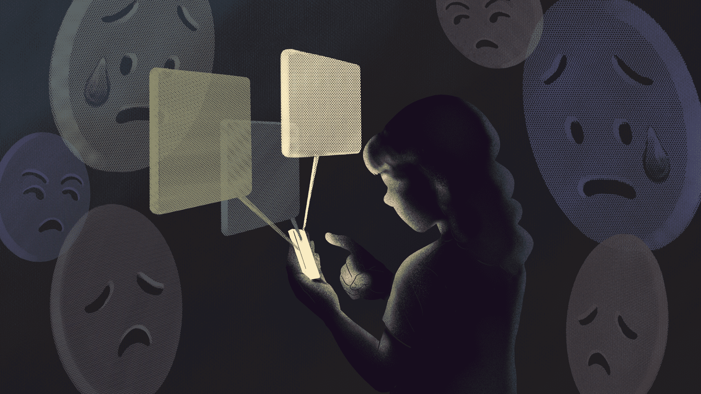

We have created the advocacy called "Eyes Glued to the Screen."
We named it that way because we wanted to give out the message or meaning that due to people's being overly addicted to social media, their attention goes only to that which they cannot get off, just like glue.
Purpose + Target Audience
The purpose of our advocacy is to educate people on the safe, responsible, and appropriate use of social media, such as giving out tips and tricks with short talks or conferences to our target audience, more specifically, our fellow youth that has been very active on it for entertainment, information, and communication.
As peers, we have observed and realized that many of us have been spending unhealthy hours on social media, which results in us not being productive enough in our daily life or just being able to see the outside world more than the social media world.
Project or Activies
Some of the projects or activities we have for our advocacy are primarily online. This would make communicating with people from other cities or countries easier.
We opt to create infographics with information about healthy social media usage; group discussions with fellow peers to create a comfortable environment for all who can relate to this issue; and one-on-one talks to dig deeper and solve or give advice on each personal situation with their addiction; forms or surveys with the group audience to know their thoughts and suggestions on our advocacy and discussions.
COPYRIGHT Google - COLLO & CAALIM - 9-XAVIER - OCTOBER 6, 2022